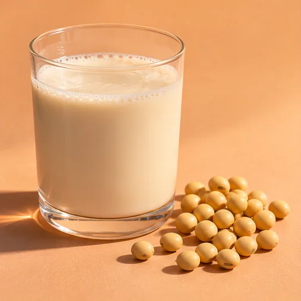

Whole bean
Soy Bean Milk

4 pack formats
- 250 mL carton
- 300 mL can
- 380 mL bottle
- 1 L carton
Ingredient and source for Soy Bean Milk
Whole soy beans. Whole soy beans give the drink its smooth texture.
Official product page ↗